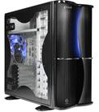
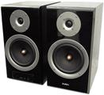
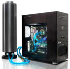

Статьи о компьютере
Компьютер ребенку. Правильный выбор.
Как не ошибиться при выборе компьютера ребенку. Тут нужен особый подход. Выбор производительности и цены. Конфигурация оптимальная для ребенка и родителей.подробнее >>
Windows XP или Windows 7 — что лучше.
Сейчас этот вопрос очень актуальный и будет таким ещё очень много времени, ведь споры на эту тему будут продолжаться пока они эти версии Windows используются на компьютерах.подробнее >>
Выбираем компьютерную клавиатуру.
Статья подскажет, как правильно выбрать компьютерную клавиатуру.подробнее >>>

подробнее >>>
Состовляющие ПК. Корпус.
Корпус - это основа любого ПК. Условно корпуса можно разделить на вертикальные и горизонтальные. При приобретении компьютера выбору корпуса системного блока следует уделять особое внимание, так именно эта составляющая ПК будет у всех на виду.подробнее >>>

подробнее >>>
Сравнение компьютерной акустики 2.1 или 2.0 .
Сравнение компьютерной акустики 2.1 или 2.0. Прослушивание музыки, кино и игр. Выявления недостатков и преимуществ акустических систем с сабвуфером и без него.подробнее >>>
Как выбрать жёсткий диск?
Сейчас в продаже имеется огромное множество моделей жёстких дисков,со своими плюсами и минусами и разобраться во всех тонкостях моделей и технологий бывает очень не просто.Так как же выбрать ж.д, чтобы плюсов было всё же больше?подробнее >>>

подробнее >>>
Водяная система охлаждения компьютерной техники.
Проблема эффективного охлаждения основных узлов компьютерной техники являлась актуальной ещё со времён появления первых компьютеров и не утратила своей важности и сейчас. Процессоры, графические чипы и другое высоко технологичное оборудование для качественной и безопасной работы нуждается в эффективном охлаждении.подробнее >>>
Как самому заправить струйный картридж?
В данной статье я познакомлю читателя с тем как заправить самостоятельно картридж, а также с тем, как устранить некоторые неполадки с картриджем. Например, что делать, если картридж "засох".подробнее >>>
Как выбрать наушники для компьютера.
При покупке дешёвых наушников для компьютера зачастую испытывается разочарование в их приобретении. Зачастую становится ясно, что наушники не прочно и неудобно держатся на голове, натирают уши, и имеют ещё множество негативных качеств. Как же выбрать наушники для ПК ?подробнее >>>

Как выбрать и как правильно пользоваться веб камерой.
Веб камера – устройство, предназначенное для передачи фото и видео изображений по средству Интернета, например через скайп и другие подобные приложения. Существует большое количество видов и типов веб камер.подробнее >>>